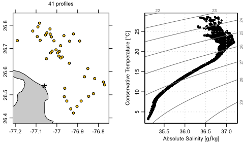

The argoFloats package for the R language provides tools for downloading and analyzing collections of oceanographic Argo float datasets. Its developers are * Dan Kelley, Dalhousie University * Jaimie Harbin, Bedford Institute of Oceanography and Dalhousie University * Clark Richards, Bedford Institute of Oceanography * Dewey Dunnington, Bedford Institute of Oceanography
The CRAN version may be installed with
The development version may be installed with
where, of course, the devtools package must be installed first, if it is not already present on the user’s system.
Typical use will require also installing several other packages, using
install.packages(c("colourpicker", "curl", "lubridate", "ncdf4",
"oce", "ocedata", "s2", "sf", "shiny"))Once things are set up as above, it will be possible to use all the features of argoFloats, many of which are illustrated in the documentation for its functions, and in the vignette that is built into the package, both of which are displayed on the user-oriented website. Note that the vignette also lists Youtube videos about the package.
As a practical example, the code block given below shows how to create a map and a temperature-salinity diagram for Argo float profiles near Abaco Island in the Bahamas. The key steps, many of which are common to most analyzes using the package, are as follows.
The
getIndexfunction is used to download a worldwide index of float profiles. (Use?getIndexto learn more about this function, and note in particular thedestdirargument, which determines where the index and other argo files will be stored locally.)The
subsetfunction is used to narrow the region of interest, yielding 39 profiles as of mid-June, 2020.getProfilesis used to download the NetCDF files that contain the profile measurements.readProfilesis used to read those files.applyQCis used to set questionable data toNA. This uses quality-control (QC) flags that are present in the argo data.plotis used to create a map plot. The image shows water depth in metres, determined through a call to thegetNOAA.bathyfunction in themarmappackage. For context, a star is drawn to indicate the centre of he focus region. A label is drawn above the map, showing the number of profiles. This illustrates the use of[[, a generic R function that is used in argoFloats to access data and metadata elements in argoFloats objects, as well as things that can be computed from these elements, such as seawater density, etc. Use?"[[,argoFloats-method"to see the details of how[[works.plotis used again, to make a temperature-salinity diagram.
With this in mind, readers ought to find it easy to read the following code. A reasonable next step would be to try altering the code, perhaps to explore another region or to see whether the QC step is actually necessary.
library(argoFloats)
library(oce)
#> Loading required package: gsw
## 1. Get worldwide float-profile index, saving to ~/data/argo by default.
indexAll <- getIndex()
## 2. Narrow to a 30km-radius circle centred on Abaco Island, The Bahamas.
index <- subset(indexAll,
circle=list(longitude=-77.06,latitude=26.54,radius=30))
#> Kept 41 cycles (0.00161%)
## 3. Get NetCDF files for these profiles, saving to ~/data/argo by default.
profiles <- getProfiles(index)
## 4. Read the NetCDF files.
argos <- readProfiles(profiles)
#> Warning in readProfiles(profiles): Of 41 profiles read, 2 have >10% of conductivity values with QC flag of 4, signalling bad data.
#> The indices of the bad profiles are as follows.
#> 3 8
#> Warning in readProfiles(profiles): Of 41 profiles read, 1 has >10% of pressure values with QC flag of 4, signalling bad data.
#> The indices of the bad profiles are as follows.
#> 3
#> Warning in readProfiles(profiles): Of 41 profiles read, 4 have >10% of salinity values with QC flag of 4, signalling bad data.
#> The indices of the bad profiles are as follows.
#> 3 6 7 13
#> Warning in readProfiles(profiles): Of 41 profiles read, 3 have >10% of temperature values with QC flag of 4, signalling bad data.
#> The indices of the bad profiles are as follows.
#> 3 7 13
## 5. Examine QC flags, and set questionable data to NA.
argosClean <- applyQC(argos)
oldpar <- par(no.readonly=TRUE)
par(mfrow=c(1, 2)) # want two-panel plot
par(mar=c(3.5, 2.0, 2.0, 2.0)) # maps do not get axis names
par(mgp=c(2,0.7,0)) # tighten axes
## 6. Plot a map of profile locations.
plot(index, which="map", bathymetry=FALSE)
points(-77.06, 26.54, pch="*", cex=3) # show centre of focus
mtext(paste(argosClean[["length"]], "profiles"), line=1.0)
## 7. Plot a TS diagram
par(mar=c(3.5, 3.5, 2.0, 1.0)) # increase left margin for name
plot(argosClean, which="TS")